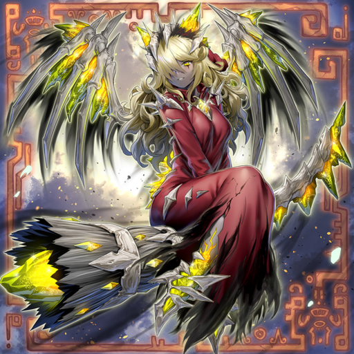

Combo Theory
Modern Yu-gi-oh has become a fast paced game. The typical game of Yu-gi-oh will involve a coinflip, a first player comboing off of one card, and setting up "boss" Monsters with powerful negation, removal, or "floodgate" effects in order to prevent the opponent from being able to do the same but attack them first as the player going second has the ability to attack first. Combos are then the most basic mechanics by which the game turns you 5 card opening hand into a threat formidable enough to win.
Documentation
Yu-gi-oh uses a variety of repeated game actions which I will be abbreviating here for the sake of brevity.
- ns = normal summon
- ss = special summon
- eff = effect
- pop = destroy
- gy = graveyard
- bin = put in graveyard
- cc = Combined Creation
Mementotlan Angwitch Combo
Ns angwitch. Add Tatsunootoshigo. Ss Tatsu from hand. Use Tatsu eff, pop Tatsu Bin Mace, Goblin, and Shleepy. Angwitch eff pop self. Ss mace. Mace pop self add Mementolan Fusion. Fusion using Mace, Tatsu, Angwitch. Ss King. King bin King 2, Akihiron, Ghattic. Ghattic GY eff ss self. Ghattic field eff add shleepy. King GY eff add Mementomictlan. Ss Shleepy with hand eff. Make Twin Dragon with Ghattic and Shleepy. Twin Dragon eff pop self add Horned Dragon and CC. Ss Goblin, ss Ghattic, ss Akihiron. Fusion Gy eff pop Akihiron, add Bone Party, Akihiron eff add fusion. Bone Party CC ss Darkblade. Make link monsters with extra effect monsters. Ss Horned Dragon. Ss CC. Set fusion, end phase set boneparty.
This can also be done by ns dark blade and pop itself for Angwitch